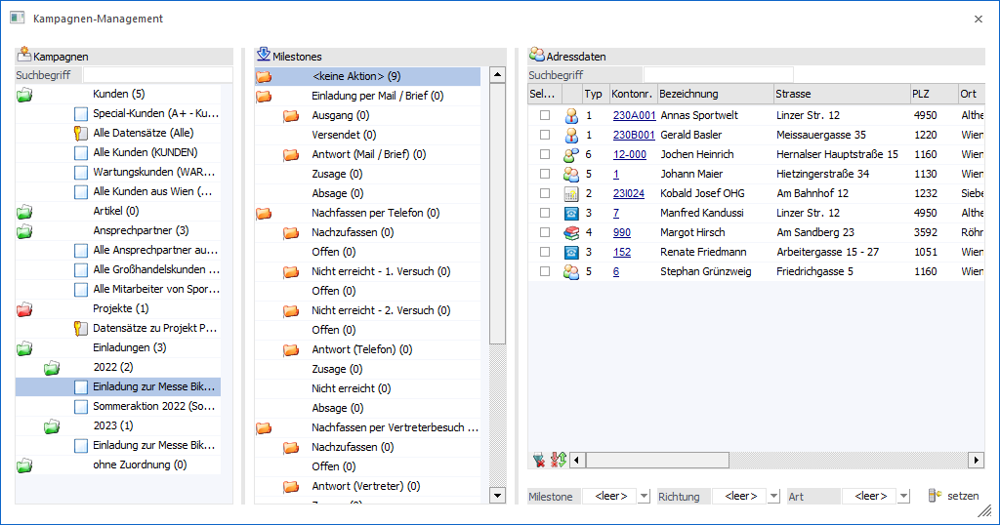
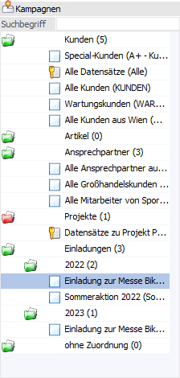
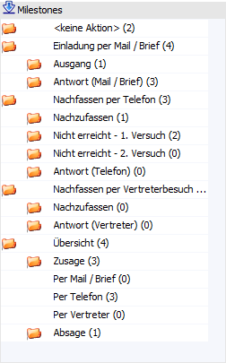
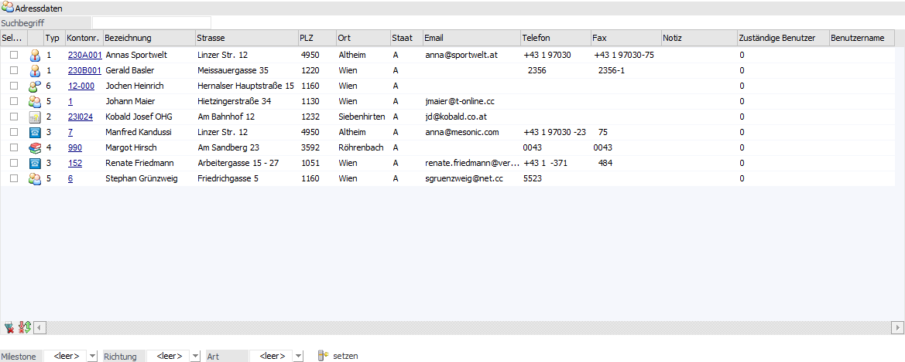
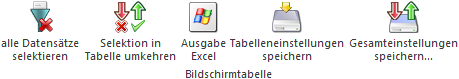
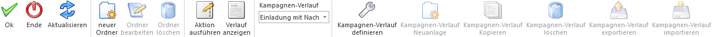
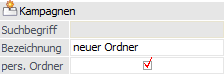
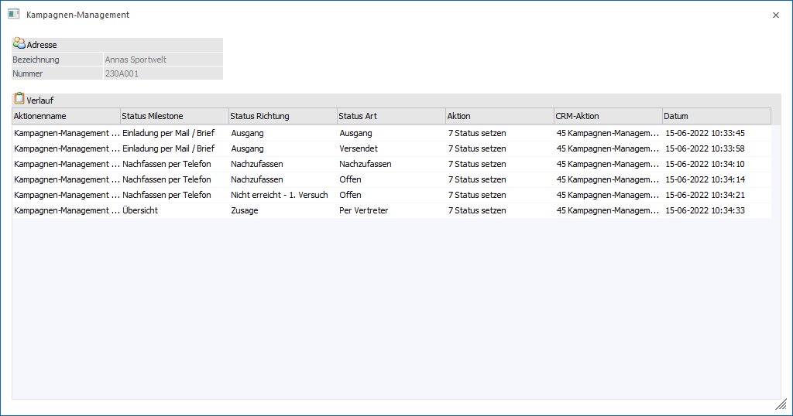

Das Kampagnen-Management, welches über den Menüpunkt
1 CRM
1 Kampagnen-Management
aufgerufen werden kann, bietet die Möglichkeit eine Vielzahl von Anwendungsbereichen der Kampagne (z.B. Einladungen, Mailings oder Telefonaktionen) zu planen und zu überwachen.

Das Kampagnen-Management ist in die folgenden 3 Bereiche unterteilt:
ü Bereich "Kampagnen-Auswahl"
ü Bereich "Milestones"
ü Tabelle "Adressdaten"
Bereich "Kampagnen-Auswahl"

In der Kampagnen-Auswahl kann die Kampagne ausgewählt werden, mit welcher gearbeitet werden soll. Die Kampagne stellt hierbei die Adressen zur Verfügung, mit denen gearbeitet werden soll (Tabelle "Adressdaten"). Wurde bereit mit der Kampagne im Kampagnen-Management gearbeitet, so wird der Kampagnen-Verlauf für den Bereich "Milestones" automatisch geladen.
Hinweis
In der Auswahl werden alle persönlichen und öffentlichen Kampagnen angezeigt. Des Weiteren können die Kampagnen per Drag & Drop anderen Ordnern zugeordnet werden.
Ø Suchbegriff
Im Feld "Suchbegriff" kann nach bestimmten Kampagnen gesucht (gefiltert) werden. Dazu muss der Suchbegriff eingegeben und mit der Taste "Enter" bestätigt werden.
Bereich "Milestones"

In dem Bereich "Milestones" werden die einzelnen Abarbeitungsschritte des Vorgangs dargestellt, welche über die Auswahlbox "Kampagnen-Verlauf" definiert werden kann. Neben den einzelnen Schritten wird mit Hilfe einer Zahl kenntlich gemacht, wie viele Adressen sich in dem jeweiligen Schritt befinden.
Um die enthaltenen Datensätze in der Tabelle der Adressdaten anzuzeigen, muss der jeweilige Ordner mittels Doppelklick angewählt werden.
Hinweis
Nähere Information zu der Definition eines Kampagnen-Verlaufs entnehmen Sie bitte dem Kapitel Kampagnen-Management - Kampagnen-Verlauf.
Tabelle "Adressdaten"

In der Tabelle "Adressdaten" werden die Adressen aus dem per Doppelklick gewählten Abarbeitungsschritt (Bereich "Milestones") angezeigt. Das Verschieben der Adressen (von Schritt zu Schritt bzw. von Milestone zu Milestone) kann wie folgt erfolgen:
ü Button "Aktion ausführen"
Durch
Auswahl einer Aktion können die selektierten Adressen in einen zuvor fest
zugewiesenen Schritt verschoben werden.
Hinweis
Die Aktionen, inklusive der Zuweisung des Schritts, werden im Kampagnen-Verlauf definiert.
ü Per Drag & Drop
Die
selektierten Adressen (Spalte "Selektiert" oder markieren der Zeilen) werden per
Drag & Drop in den gewünschten Schritt gezogen.
ü Zuweisungs-Buttons
Über die
Buttons unterhalb der Adresstabelle können alle zuvor selektierten Adressen
(Spalte "Selektiert") in den ausgewählten Bereich verschoben werden.
In der Tabelle werden folgende Spalten dargestellt:
Ø Selektieren
Mit Hilfe der Checkbox kann definiert werden, mit welchen Adressen agiert werden soll (Button "Aktion ausführen" / "Drag & Drop" / "Zuweisungs-Buttons").
Ø Adressart
Diese Spalte gibt in Form eines Icons Auskunft darüber, um was für eine Art von Adresse es sich handelt.
ü  - Personenkonten
- Personenkonten
ü  - Interessenten (Interessenten werden in
der WinLine FAKT verwaltet)
- Interessenten (Interessenten werden in
der WinLine FAKT verwaltet)
ü  - Ansprechpartner (von Personenkonten)
- Ansprechpartner (von Personenkonten)
ü  - Kontakte (Namen und Adressen ohne fixe
Zuordnung)
- Kontakte (Namen und Adressen ohne fixe
Zuordnung)
ü  - Vertreter (Vertreter werden in der
WinLine FAKT verwaltet)
- Vertreter (Vertreter werden in der
WinLine FAKT verwaltet)
ü  - Arbeitnehmer (Arbeitnehmer werden im
WinLine LOHN A bzw. WinLine SMART verwaltet)
- Arbeitnehmer (Arbeitnehmer werden im
WinLine LOHN A bzw. WinLine SMART verwaltet)
Hinweis
Mit Hilfe eines Doppelklicks auf das Icon wird in das jeweilige Stammdatenprogramm der Adresse gewechselt und der Datensatz aufgerufen. Bei einem Doppelklick + STRG-Taste wird in das WinLine INFO-Modul der Adresse gewechselt.
Ø Typ
In dieser Spalte wird die Art der Adresse in Form einer Zahl erläutert:
ü 1 - Personenkonten
ü 2 - Interessenten (Interessenten werden in der WinLine FAKT verwaltet)
ü 3 - Ansprechpartner (von Personenkonten)
ü 4 - Kontakte (Namen und Adressen ohne fixe Zuordnung)
ü 5 - Vertreter (Vertreter werden in der WinLine FAKT verwaltet)
ü 6 - Arbeitnehmer (Arbeitnehmer werden im WinLine LOHN A bzw. WinLine SMART verwaltet )
Ø Kontonr.
An dieser Stelle wird die Nummer der Adresse angezeigt.
Ø Bezeichnung
Hier wird der Name der Adresse dargestellt.
Ø Straße / PLZ / Ort / Staat
In diesen Spalten wird die Adresse des Datensatzes angezeigt.
Ø Email
Hier wird die E-Mail-Adresse dargestellt.
Ø Telefon
An dieser Stelle wird die Telefonnummer der Adresse angezeigt. Wenn bei dem Datensatz eine Telefonnummer eingetragen ist, wird per Doppelklick - sofern die entsprechenden Voraussetzungen am Arbeitsplatz vorhanden sind - die Nummer gewählt.
Ø Fax
Hier wird die Faxnummer angezeigt.
Ø Notiz
In der Spalte "Notiz" kann eine Information zu der Adresse hinterlegt werden.
Ø Zuständige Benutzer
An dieser Stelle kann ein WinLine Benutzer zugeordnet werden. Über den Spaltenfilter kann in weiterer Folge eine schnelle Selektion auf "seine" Adressen erfolgen.
Ø Benutzername
Hier wird der Benutzername des zuständigen Benutzers angezeigt.
Ø Zuweisung-Buttons
Alle selektieren Adresse können mit Hilfe der Auswahlfelder "Milestone", "Richtung" und "Art" in einen neuen Schritt verschoben werden. Das Verschieben findet hierbei durch Anwahl des Buttons "setzen" statt.
Achtung
Die Adresse können über diesen Weg nur in einen folgenden Schritt geschoben werden. Ein Verschieben in einen Vorschritt ist nur per Drag & Drop möglich.
Tabellenbuttons

Ø alle Datensätze selektieren
Beim Drücken dieses Buttons werden alle Datensätze der Tabelle selektiert.
Ø Selektion in Tabelle umkehren
Durch Anklicken des Buttons "Selektion in Tabelle umkehren" wird die Option "Selektion" bei allen Datensätzen in das Gegenteil gekehrt.
Ø Ausgabe Excel
Durch Anwahl des Buttons "Ausgabe Excel" wird der Inhalt der Tabelle an Microsoft Excel übergeben.
Ø Tabelleneinstellungen speichern
Die Spalten einer Tabelle können grundsätzlich an beliebige Positionen verschoben, bzw. in der Breite entsprechend angepasst werden. Durch Anwahl des Buttons "Tabelleneinstellungen speichern" werden die Einstellungen benutzerspezifisch gespeichert und bei dem nächsten Aufruf des Programmpunktes wieder vorgeschlagen.
Ø Gesamteinstellungen speichern
Im Gegensatz zu "Tabelleneinstellungen speichern" können mit "Gesamteinstellungen speichern" mehrere Tabellenaufbauten gespeichert und nach Wunsch geladen werden. Zusätzlich werden Sonderfunktionen der Tabelle (z.B. "Spalte gruppieren") ebenfalls bei der Speicherung bedacht.
Buttons

Ø Ok
Durch Anwahl des Buttons "Ok" bzw. der Taste F5 werden die Notiz und die Benutzer-Zuordnungen gespeichert. Das Verschieben von Adressen wird hingegen sofort gespeichert.
Hinweis
Befindet man sich gerade in der Anlage oder dem Bearbeiten eines Ordners (siehe Button "Neuer Ordner" bzw. "Ordner bearbeiten") so erfolgt durch Anwahl des Buttons "Ok" bzw. der Taste F5 eine Speicherung des neuen bzw. bearbeiteten Ordners.
Ø Ende
Durch Anwahl des Buttons "Ende" bzw. ESC wird das Fenster "Kampagnen-Management" geschlossen und alle nicht gespeicherten Eingaben verworfen.
Ø Aktualisieren (nicht bei "Kampagnen-Verlauf definieren")
Mit Hilfe des Buttons "Aktualisieren" wird der Bereich "Milestones" und die Tabelle "Adressdaten" mit den aktuellen Informationen neu geladen.
Ø neuer Ordner (nicht bei "Kampagnen-Verlauf definieren")
Durch Anwählen dieses Buttons kann ein neuer Ordner angelegt werden. Dabei wird ein eigenes Feld zur Eingabe der Bezeichnung des Ordners eingeblendet. Ebenfalls kann in diesem Bereich festgelegt werden, ob es sich um einen persönlichen oder öffentlichen Ordner handelt.
Beispiel

Hinweis
Die Anlage neuer Ordner ist nur möglich, wenn der Fokus auf einem Ordner oder einer Kampagne der "obersten" Ebene steht. Nicht möglich ist eine Anlage eines neuen Ordners, wenn der Fokus bereits auf einem Ordner oder einer Kampagne der zweiten Ebene steht.
Ø Ordner bearbeiten (nicht bei "Kampagnen-Verlauf definieren")
Befindet sich der Fokus auf einer Ordner-Zeile, so kann durch Anwahl dieses Buttons die Bezeichnung, sowie die Einstellung "persönlich" bearbeitet werden. Das Beenden der Bearbeitung (ohne Speicherung) erfolgt, indem der Button "Ordner bearbeiten" erneut angewählt wird. Eine Speicherung wird durch Anwahl des Buttons "Ok" bzw. der Taste F5 ausgelöst.
Ø Ordner löschen (nicht bei "Kampagnen-Verlauf definieren")
Durch Anwählen dieses Buttons wird, nach Bestätigung einer Sicherheitsabfrage, jener Ordner gelöscht, auf welchen der Fokus gesetzt ist. Ordner können nur gelöscht werden, wenn es darunter keine Unterordner gibt bzw. keine Kampagnen darin enthalten sind.
Ø Aktion ausführen (nicht bei "Kampagnen-Verlauf definieren")
Mit dem Button "Aktion ausführen" kann einer, der zuvor unter "Kampagnen-Verlauf definieren" hinterlegten Aktionen, ausgeführt werden.
Hinweis
Es werden nur Aktionen dargestellt, welche Adressen in einen folgenden Schritt verschieben würden. Ein Verschieben in einen Vorschritt ist nur per Drag & Drop möglich.
Ø Verlauf anzeigen (nicht bei "Kampagnen-Verlauf definieren")
Mit Hilfe des Buttons "Verlauf anzeigen" wird die Verlauf-Tabelle angezeigt. In dieser wird aufgelistet, welche Adresse, wann, wie und wohin verschoben wurde.
Beispiel
Die Adresse "Annas Sportwelt" wurde per Drag & Drop nacheinander in 7 unterschiedliche Schritte verschoben.

Ø Kampagnen-Verlauf
Aus der Auswahlbox "Kampagnen-Verlauf" kann ein zuvor angelegter Verlauf ausgewählt werden. Mit diesem werden die "Aktionen" und die "Milestones" gesteuert.
Hinweis
Wurde bereit mit der gewählten Kampagne im Kampagnen-Management gearbeitet, so wird der entsprechende Kampagnen-Verlauf automatisch geladen.
Achtung
Jede Kampagne kann nur 1x im Kampagnen-Management sinnvoll genutzt werden. Von dem Umschalten des Verlaufs bei einer bereits be- bzw. genutzten Kampagne wird abgeraten.
Ø Kampagnen-Verlauf definieren
Mit Hilfe des Buttons "Kampagnen-Verlauf definieren" kann ein bestehender Verlauf editiert oder ein neuer Verlauf kreiert werden (nähere Informationen entnehmen Sie bitte dem Kapitel Kampagnen-Verlauf).
Ø Kampagnen-Verlauf Neuanlage (nur bei "Kampagnen-Verlauf definieren")
Durch Anwahl des Buttons "Kampagnen-Verlauf Neuanlage" kann ein neuer Kampagnen-Verlauf angelegt werden.
Ø Kampagnen-Verlauf kopieren (nur bei "Kampagnen-Verlauf definieren")
Mit dem Button "Kampagnen-Verlauf kopieren" kann ein Kampagnen-Verlauf kopiert werden.
Ø Kampagnen-Verlauf löschen (nur bei "Kampagnen-Verlauf definieren")
Mit Hilfe des Buttons "Kampagnen-Verlauf löschen" kann ein Kampagnen-Verlauf gelöscht werden.
Ø Kampagnen-Verlauf exportieren (nur bei "Kampagnen-Verlauf definieren")
Durch Anwahl des Buttons "Kampagnen-Verlauf exportieren" kann ein Kampagnen-Verlauf exportiert werden.
Ø Kampagnen-Verlauf importieren (nur bei "Kampagnen-Verlauf definieren")
Mit dem Button "Kampagnen-Verlauf importieren" kann ein Kampagnen-Verlauf importiert werden.